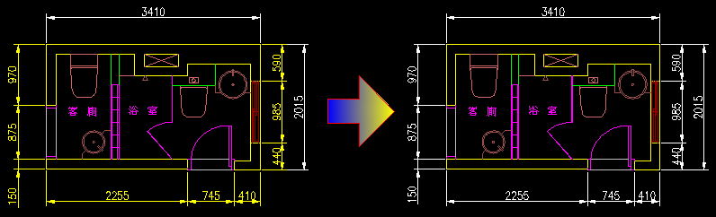

當圖面中的圖層名稱使用，與公司準則標準不一樣時！
例如：準則規範圖面需使用圖層名稱為「A-DIM」，圖層顏色為「白色」>> 建立標註尺寸物件
但是圖面中誤用了圖層名稱為「DIM」，圖層顏色為「黃色」>> 建立標註尺寸物件

任務：必須把圖面中「DIM」圖層物件，改為「A-DIM」圖層物件。
方式一：
通常我都會使用「複製性質」MATCHPROP指令來變更物件圖層，然後再把不對的圖層名稱刪除，但是這並不是最快捷的步驟！
※其實還有很多快速方式可以達成，希望大家可以先分享自己的作法，再來看以下的「方式二」快速解決方式！
練習完成後請說明「步驟」、「貼圖」及「上傳檔案」供檢測，回答的會員朋友可以得到（威望值+6），前二十名可再獲得（積分+1）。
方式二：
只需要使用一個指令即可立即「變更物件圖層」及「圖層名稱刪除」喔～